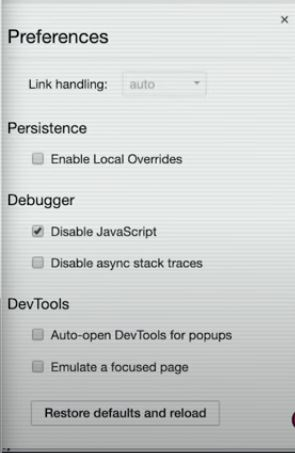
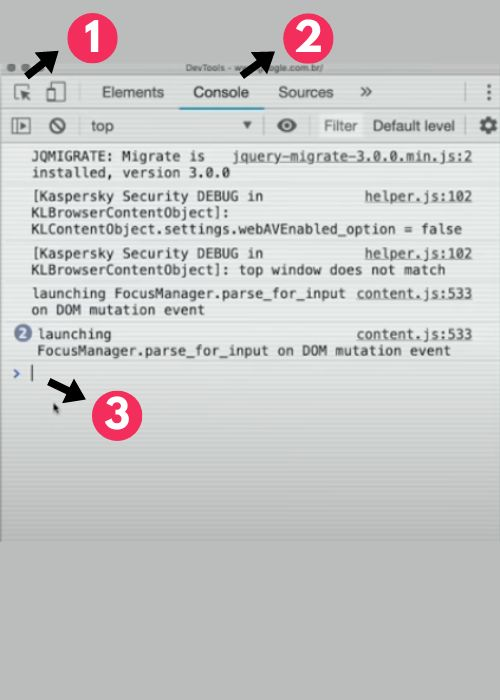

Módulo A
Javascript faz quase tudo!
Conceito: Cliente x Servidor

Javascript funciona muito mais do lado do cliente
Construção de um web site
Necessário 3 profissionais
- Jornalista = Conteúdo = HTML
- Designer = Estilo = CSS
- Programador = Interação = JS
Desabilitar JS em sites
Vá até o DEVTOOLS > configurações > Disable JS
Modificar sites que usam JS
- 1.Para pegar o nome
- 2.Local para fazer as modificações
- 3.Local para digitar o código
Para alterar a cor do fundo do goole é necessário abrir o devtools, entrar em console e digitar: document.body.style.background = 'black'. Isso quer dizer o estilo(style) da cor do fundo(background) do corpo(body) do documento(document) é = preta('black')
Digitando alert('texto qualquer') o site envia uma notificação
Digitando document.querySelector('nome').style.filter ='grayscale(100%). Esse codigo vai deixar a imagem em branco e preto.
Digitando document.querySelector('nome').style.visibility = 'hidden'. Vai esconder a imagem
Digitando documento.querySelector('nome').innerText = 'Digite o seu texto'. Vai alterar o texto da manchete
Observação: Essas alterações alteram apenas o javascript que já chegou em sua maquina. Não interfere na plataforma do site, ou seja, outras pessoas que estão acesando o site não veem essa modificação